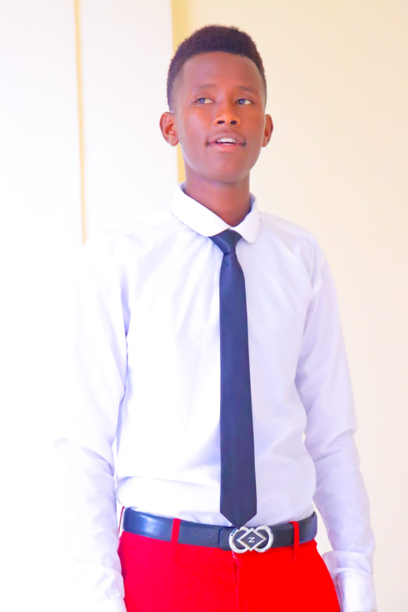

EDWARD SALONIK

Email:edwardsalonik@gmail.com
Phone: 0795018886
LinkedIn:()
Location:Nairobi-Kenya
PROFESSIONAL SUMMARY
Innovative and detail-oriented Software Engineer with a Bachelor's degree in Software Engineering. Proficient in web development, graphic design, and cybersecurity. Highly skilled in Adobe Photoshop, with a keen eye for creativity and design. CEO of E-TECH CREATIVES, a company specializing in web development and graphic design. Passionate about delivering high-quality digital solutions and enhancing user experiences
SKILLS
- Software Engineering-Web development, UI/UX design, cybersecurity
- Graphic Design-Adobe Photoshop, branding, digital marketing assets
- Programming Languages-JavaScript, HTML, CSS:
- Project Management-Agile methodologies, team leadership, client relations
WORK EXPERIENCE
CEO & Lead Developer
E-TECH CREATIVES 2024-Present
Founded and manage a tech company specializing in web development and graphic design.
Designed and developed custom websites for businesses and individuals.
Created visually appealing digital assets using Adobe Photoshop.
Led a team in executing innovative software solutions for clients.
Managed client relationships and delivered high-quality projects on time.
Software Engineer & Graphic Designer
Freelance 2023-Present
- Developed responsive websites with a focus on UX/UI design.
- Designed promotional materials, logos, and branding elements.
.
- Worked closely with clients to bring their visions to life through technology and design.
- enhanced online security.
EDUCATION
Bachelor’s Degree in Software Engineering
ZETECH UNIVERSITY 2022-PRESENT
CERTIFICATIONS
- Web Development & UI/UX Design Certification
- Adobe Photoshop Advanced Certification
- Cybersecurity Fundamentals Certification
HOBBIES & INTERESTS
- Football
- Reading Novels
- Technology & Innovation
REFERENCES
Available upon request
others
contact me